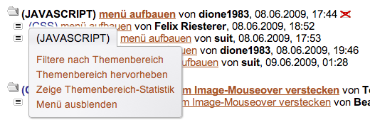
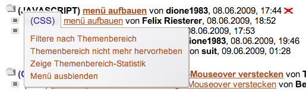
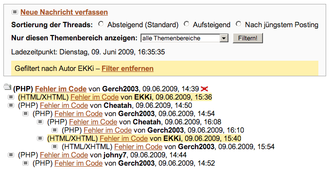
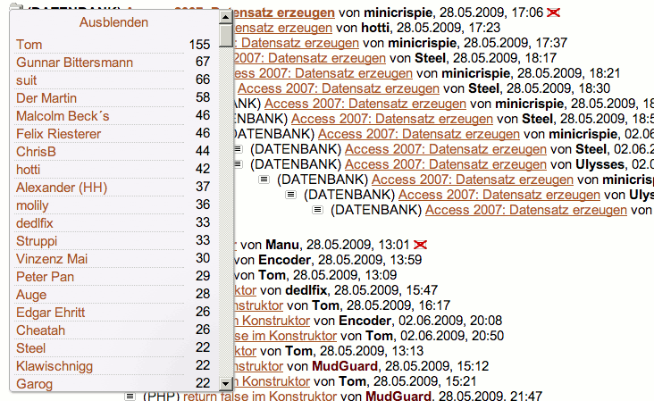
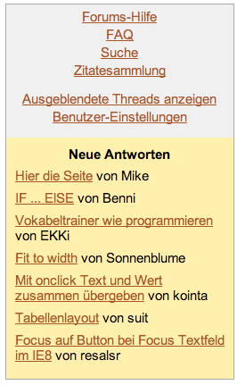

Das hier beschriebene Script fügt der benutzerspezifischen Ansicht des SELFHTML-Forums einige nützliche clientseitige Funktionen hinzu. Viele Ideen für stammen von Zapps Script Neue Funktionen für das SELFHTML-Forum. Vielen Dank an ihn!
Das Script verwendet aktuelle JavaScript-Techniken und funktioniert in den aktuellen Versionen von Firefox, Chrome, Opera, Safari und Internet Explorer (Stand Juli 2013). Ältere Browser wie IE 9 werden nicht unterstützt.
Die Funktionalität wird durch ein Script und ein zugehöriges Stylesheet bereitgestellt. Script und Stylesheet müssen in den Benutzer-Einstellungen unter Experten-Optionen eingebunden werden. Dazu werden die URLs wie folgt eingetragen:
* CSS
> Eigenes Stylesheet
> http://molily.de/selfhtml-forum-js/javascript.css
> [X] Ergänzt das Standard-Stylesheet
* Javascript
> Eigene JS-Datei
> http://molily.de/selfhtml-forum-js/forum.js
Damit das Scripts vollständig funktioniert, sind zudem folgende Einstellungen nötig:
* Threads und Postings
> Postings als gelesen markieren
> [X] Bereits besuchte Postings serverseitig als gelesen markieren
* Hervorhebung von Postings
> Hervorhebung eigener Postings
> [X] Eigene Postings hervorheben
Eine Angabe von Farben ist sinnvoll, aber nicht notwendig für das Script.
Alle Regeln für Darstellung sind in der Datei javascript.css untergebracht. Sie können sich das Script kopieren, z.B. die Größen und Farben anpassen, das angepasste Script irgendwo hochladen und dann deren URL angeben. Oder sie schreiben ein Stylesheet, dass javascript.css mit @import einbindet und gewisse Regeln überschreibt. Oder Sie binden javascript.css wie oben beschrieben ein und geben zusätzlich ein Inline-CSS mit überschreibenden Regeln ein.
Die normale Threadansicht sieht folgendermaßen aus:
Das Script bietet nun ein Kontextmenü an zwei Stellen. Darüber sind die meisten Funktionen zugänglich. Das Kontextmenü wird aktiviert durch einen Linksklick auf einen Autornamen bzw. auf einen Themenbereich-Namen.
Das Autoren-Kontextmenü:
Das Themenbereich-Kontextmenü:

Diese Kontextmenüs haben verschiedene Einträge, je nachdem, ob es sich um einen hervorgehobenen Themenbereich bzw. Autor handelt oder nicht oder ob man selbst der Autor ist. Ein Beispiel für einen hervorgehobenen Themenbereich:

Über entsprechende Links im Kontextmenü lässt sich die Forumshauptseite nach dem angeklickten Autoren bzw. Themenbereich filtern.
Eine Filterung nach Autor sieht folgendermaßen aus:

Die Postings des jeweiligen gesuchten Autors werden zur Zeit gelb markiert.
Filterung nach Themenbereich:
Wie man sieht erscheint oben im Header ein Info-Bereich mit einem Link, mit der sich der Filter wieder aufheben kann. Sie können aber auch einen anderen Filter über das Kontextmenü aktivieren, die alte Filterung wird dann aufgehoben und die neue angewendet.
Der browserseitige JavaScript-Filter kann auch über das Filter-Formular im Forumskopf bedient werden. Dieses funktioniert normalerweise ohne JavaScript. Das Script schaltet sich dort ein:
Das Absenden des Formulars führt zur Filter-Ansicht wie im vorigen Screenshot.
Über die entsprechenden Links im Kontextmenü wird eine Anfrage an den Server gesendet, sodass der angeklickte Autor bzw. Themenbereich zur Whitelist hinzugefügt wird. Nachdem die Änderung abgespeichert wurde, wird die Forumshauptseite neu geladen, sofern gewünscht.
In den obigen Screenshots sind Autoren auf der Whitelist dunkelrot, Themenbereiche auf der Whitelist blau hervorgehoben. (Und der eigene Autornname, in den Screenshots »molily«, ist blau hervorgehoben.) Diese Farben können selbstverständlich in der Benutzereinstellungen individuell angepasst werden.
Ein Ausblenden bestimmter Themenbereiche ist derzeit nicht möglich. Dies kann nur manuell über Benutzereinstellungen: Ausblenden von Postings bewerkstelligt werden. Das Ausblenden von Themenbereichen ist serverseitig nämlich als Whitelist gelöst. Wenn Sie eine Kategorie ausblenden wollen, müssen sie also alle anderen in der Liste »Nur Postings dieser Kategorien anzeigen« aktivieren!
Über das Kontextmenü kann eine Autoren- bzw. Themenbereich-Statistik eingeblendet werden. Diese erscheint als Layer auf der linken Seite und nimmt die Browserfenster-Höhe ein.
Autorenstatistik:

Themenbereich-Statistik:
Mit einem Klick auf die Autoren- bzw. Themenbereich-Namen kann die Forumshauptseite nach diesen gefiltert werden.
Im Forumskopf werden beim Laden alle noch ungelesenen Antworten auf eigene Beiträge aufgelistet. Dieser »Followup-Notice« sieht so etwa so aus:

Das Script besteht aus mehreren z.T. unabhängigen Modulen. Module sind einfache Objekte. Sie müssen in der Modulverwaltung Modules registriert werden.
Ein Beispielmodul für die Hauptseite:
var MainPage = {};
Modules.add(MainPage);
MainPage.documentType = 'hauptseite';
MainPage.init = function () {
Forum.threadList = document.getElementById('root');
};
Ein Modul wird beim DOMContentLoaded-Event gestartet, sofern es auf den Seitentyp passt (Forumshauptseite, Postingansicht oder beides). Das Modul gibt in der documentType-Eigenschaft an, wann es geladen werden soll.
Ein Modul muss eine init-Funktion bereitstellen, über die es gestartet wird.
Für die Filterung und die Statistik werden beim Start vier Indizes angelegt. Sie enthalten jeweils Referenzen auf die li-Elemente im DOM.
Forum.postingsByAuthor = {};
Forum.threadStartsByAuthor = {};
Forum.ownPostings = [];
Forum.postingsByCategory = {};
In den beiden Objects postingsByAuthor und postingsByCategory werden die Postings nach Autornamen bzw. Themenbereichen gespeichert. Unter Forum.postingsByAuthor['molily'] findet sich beispielweise ein Array mit allen li-Elemente der Postings, die der Autor »molily« verfasst hat. Unter Forum.postingsByCategory['JAVASCRIPT'] findet sich ein Array mit allen Postings des Themenbereichs »JAVASCRIPT«.
Im Object Forum.threadStartsByAuthor finden sich alle Beiträge, die einen Thread eröffnet haben, nach Autornamen sortiert. Es handelt sich ebenfalls um Arrays mit li-Elemente. Forum.ownPostings ist schließlich ein Array mit eigenen Postings, ebenfalls in Form von li-Elementen.
Das Ansprechen und Einfügen von Elementen sowie das Ändern ihres Inhaltes erfolgt über eine Abstraktion namens Layer. Die Funktion createLayer gibt ein Objekt vom Typ Layer zurück. Es erzeugt ein Element mit der angegebenen ID und fügt es an der angegebenen Stelle im DOM ein:
var layer = createLayer({
id: 'filter-status',
parent: document.getElementById('beschreibung')
});
layer.html(infoText).show();
layer.element.addEventListener('click', Filter.checkRemoveFilter, false);
Wenn schon ein Layer mit der ID angelegt wurde, gibt die Funktion das vorhandene Layer-Objekt zurück. Der obige Befehl kann also gefahrlos mehrfach aufgerufen werden.
Das Layer-Objekt hat die Methoden show, hide, html und remove. Die ersten beiden erklären sich von selbst. Mit .html('string') wird die innerHTML-Eigenschaft gesetzt. remove entfernt das Element dauerhaft aus dem DOM. Die Methoden erlauben Verkettung (Chaining), d.h. sie geben die Layer-Instanz zurück.
Vorschläge für weitere Features, Anpassungen und Code-Ergänzungen werden gerne ins Script aufgenommen.
Der Code des Scripts wird auf GitHub verwaltet. Sie können das Projekt mit der Versionsverwaltung Git herunterladen und bearbeiten, um Verbesserungen einzupflegen und zur Weiterentwicklung beizutragen.
molily, zapperlott@gmail.com